<title>One Mould Body</title>
<meta name="claude:viewport-fit-sides" content="cover">
<link rel="stylesheet" href="https://fonts.googleapis.com/css2?family=Space+Grotesk:wght@500;700&family=Inter:wght@400;600&family=JetBrains+Mono:wght@400&display=swap">
<style>
/* Layout: one reading column; picture pairs side by side, stacking on phones */
:root{--bg:#f3f2ee;--fg:#1d1c19;--muted:#68645a;--line:#d8d4c8;--accent:#b8860b;--pink:#c2338f;--panel:#e9e6dd;
--display:"Space Grotesk",system-ui,sans-serif;--body:"Inter",system-ui,sans-serif;--mono:"JetBrains Mono",ui-monospace,monospace}
@media (prefers-color-scheme:dark){:root:not([data-theme="light"]){--bg:#16150f;--fg:#ece8dc;--muted:#a39d8c;--line:#38352b;--accent:#e2b13c;--pink:#ef6cc0;--panel:#22201a;color-scheme:dark}}
:root[data-theme="dark"]{--bg:#16150f;--fg:#ece8dc;--muted:#a39d8c;--line:#38352b;--accent:#e2b13c;--pink:#ef6cc0;--panel:#22201a;color-scheme:dark}
body{background:var(--bg);color:var(--fg);font-family:var(--body);font-size:15px;line-height:1.55;padding-left:max(16px,env(safe-area-inset-left,0px));padding-right:max(16px,env(safe-area-inset-right,0px));padding-block:28px 56px}
main{max-width:1080px;margin:0 auto;display:grid;gap:28px}
h1,h2,h3{font-family:var(--display);text-wrap:balance;margin:0}
h1{font-size:2rem} h2{font-size:1.35rem;border-top:1px solid var(--line);padding-top:20px} h3{font-size:1rem;color:var(--muted);font-weight:500}
p,li{max-width:68ch;margin:0} section{display:grid;gap:12px}
.lede{color:var(--muted)}
.pair{display:grid;gap:8px}
.figs{display:grid;grid-template-columns:repeat(auto-fit,minmax(min(100%,420px),1fr));gap:14px}
figure{margin:0;display:grid;gap:6px;min-width:0}
figure img{width:100%;height:auto;image-rendering:pixelated;border-radius:4px;background:#000}
figcaption{display:flex;flex-wrap:wrap;gap:4px 14px;font-family:var(--mono);font-size:12.5px;color:var(--muted);font-variant-numeric:tabular-nums}
figcaption b{font-family:var(--display);font-size:15px;color:var(--fg)}
.films{display:grid;grid-template-columns:repeat(auto-fit,minmax(min(100%,320px),1fr));gap:16px}
.films img{width:100%;max-width:480px}
.q{background:var(--panel);border-radius:6px;padding:16px 18px;display:grid;gap:8px}
.pink{color:var(--pink);font-weight:600} .gold{color:var(--accent);font-weight:600}
table{border-collapse:collapse;font-variant-numeric:tabular-nums;font-size:13.5px} .tw{overflow-x:auto}
td,th{padding:5px 12px 5px 0;text-align:left;border-bottom:1px solid var(--line)}
code{font-family:var(--mono);font-size:12.5px}
</style>
<main>
<header style="display:grid;gap:8px">
<h1>One mould body</h1>
<p class="lede">The race world you played (5,000 walkers at the start, CPU copy), grown 300 game seconds. Every picture is the simulation: walkers yellow, a cut-off piece's walkers <span class="pink">pink</span>, crystals blue, rock grey.</p>
</header>

<section>
<h2>Which looks like one creature?</h2>
<p>Each pair is the same seed under two rule sets, placed A or B at random per seed. The key is kept off this page. One set is today's rules. The other adds two rules: touching walkers share food, and hungry walkers follow food harder. "Parts" counts pieces holding 1% of the mould or more, with gaps up to 2 dish cells bridged.</p>
<div class="pair"><h3>Seed 1</h3><div class="figs"><figure>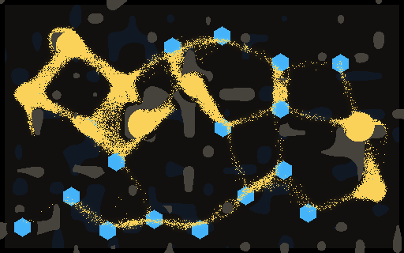<figcaption><b>A</b><span>16,247 walkers</span><span>1 part</span><span>largest part 100%</span><span>8 of 23 crystals eaten from</span></figcaption></figure><figure>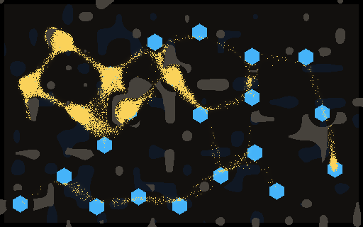<figcaption><b>B</b><span>7,525 walkers</span><span>6 parts</span><span>largest part 89%</span><span>6 of 23 crystals eaten from</span></figcaption></figure></div></div><div class="pair"><h3>Seed 4</h3><div class="figs"><figure>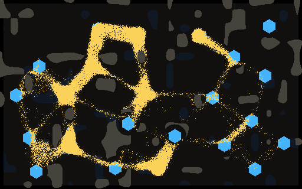<figcaption><b>A</b><span>14,731 walkers</span><span>2 parts</span><span>largest part 86%</span><span>10 of 23 crystals eaten from</span></figcaption></figure><figure>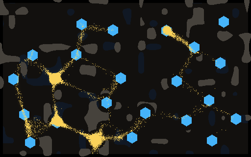<figcaption><b>B</b><span>4,252 walkers</span><span>5 parts</span><span>largest part 55%</span><span>3 of 23 crystals eaten from</span></figcaption></figure></div></div><div class="pair"><h3>Seed 7</h3><div class="figs"><figure>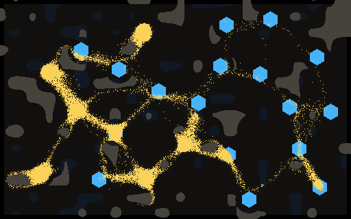<figcaption><b>A</b><span>9,706 walkers</span><span>3 parts</span><span>largest part 81%</span><span>8 of 23 crystals eaten from</span></figcaption></figure><figure>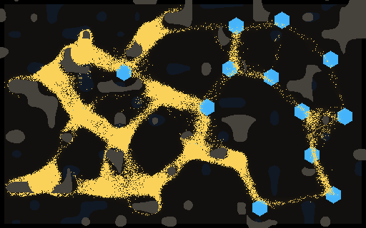<figcaption><b>B</b><span>21,580 walkers</span><span>1 part</span><span>largest part 99%</span><span>11 of 23 crystals eaten from</span></figcaption></figure></div></div><div class="pair"><h3>Seed 8</h3><div class="figs"><figure>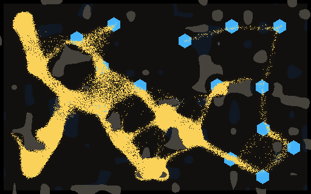<figcaption><b>A</b><span>22,873 walkers</span><span>1 part</span><span>largest part 99%</span><span>14 of 23 crystals eaten from</span></figcaption></figure><figure>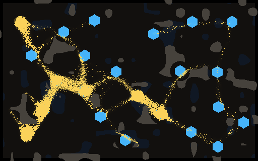<figcaption><b>B</b><span>8,963 walkers</span><span>1 part</span><span>largest part 96%</span><span>7 of 23 crystals eaten from</span></figcaption></figure></div></div>
</section>

<section>
<h2>Films in the game's own look</h2>
<p class="lede">Added 14:55Z, after you saw specks. These are the Larder World window's own pictures (the GPU engine and its shading, on the Fork map, recorded without a window), one frame every 2 game seconds, played at 8x. One rule set is today's and the other is sharing + hunger. A and B are drawn at random per pair, and the key is in the repo, not on this page.</p>
<h3>Idle squad, whole map, 4 minutes</h3>
<div class="figs">
<figure>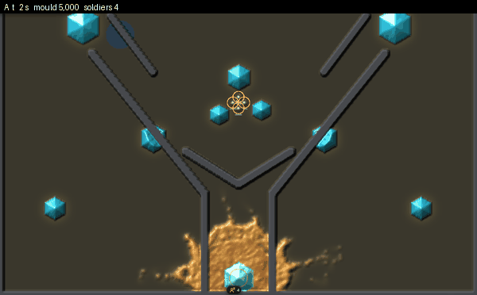<figcaption><b>A</b><span>14,073 walkers at 4:00</span><span>all 4 soldiers dead</span></figcaption></figure>
<figure><figcaption><b>B</b><span>3,855 walkers at 4:00</span><span>4 soldiers alive</span></figcaption></figure>
</div>
<h3>The same rounds, close in on the squad</h3>
<div class="figs">
<figure>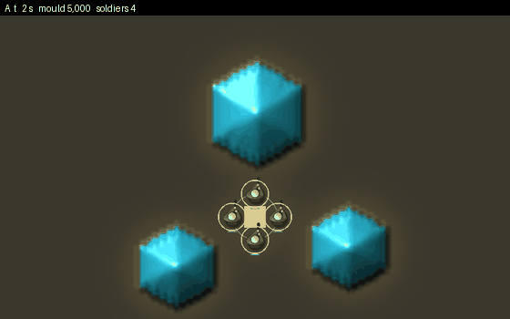<figcaption><b>A</b><span>14,073 walkers at 4:00</span></figcaption></figure>
<figure><figcaption><b>B</b><span>3,855 walkers at 4:00</span></figcaption></figure>
</div>
<h3>Rush hand (the squad attacks the core), until the squad falls</h3>
<div class="figs">
<figure>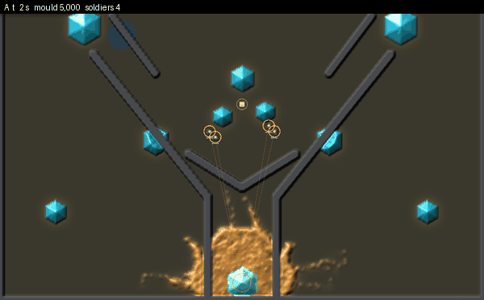<figcaption><b>A</b><span>squad wiped at 2:43</span><span>4,694 walkers</span><span>1,545 killed by shots</span></figcaption></figure>
<figure>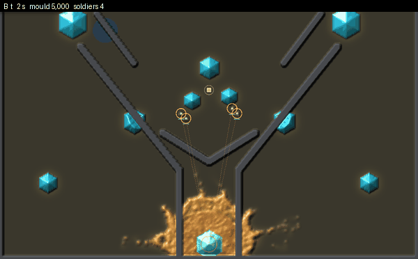<figcaption><b>B</b><span>squad wiped at 2:22</span><span>7,061 walkers</span><span>1,508 killed by shots</span></figcaption></figure>
</div>
<p>In both, the mould reaches out as broken dotted lines: clumps of walkers strung along a trail, not one sheet. That is the "specks" you saw, and neither rule set removes it. Sharing + hunger fills the trunks and the crystals more, but its far edges are just as dotted. To play it yourself on the desktop: <code>cargo run --release --bin larder-world -- energy_flow=0.05 hunger_scent=8</code>; leave the two keys off for today's rules.</p>
</section>

<section>
<h2>What a cut does</h2>
<p>I ringed off a hunk of the body away from any crystal: every walker on a ring 4 dish cells wide was killed and its trail cleared.</p>
<div class="films">
<figure>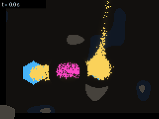<figcaption><b>Today, cut left open</b><span>the main body crosses the gap in 1-2 s</span></figcaption></figure>
<figure><figcaption><b>Today, gap held 30 s</b><span>229 walkers</span><span>starves by 23 s</span></figcaption></figure>
<figure>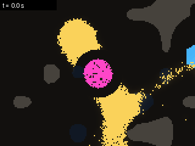<figcaption><b>Sharing + hunger, cut left open</b><span>refilled in 2 s</span></figcaption></figure>
<figure><figcaption><b>Sharing + hunger, gap held 30 s</b><span>398 walkers</span><span>starves by 10 s, all together</span></figcaption></figure>
</div>
<p>Films run at twice game speed. "Gap held" means the ring stayed closed to the mould for 30 s. That's a stand-in for steady fire, and the Larder thread now makes holes under fire hold that way.</p>
<ul>
<li><b>Gaps close fast.</b> Walkers move about 15 dish cells a game second, faster than soldiers. In every cut I measured (with today's rules and with each new rule set), the main body refilled a 4-cell gap within 2 s. So a cut only matters while something holds it open.</li>
<li><b>A held-off hunk off food stays one round lump and starves.</b> It doesn't scatter, with today's rules or with the new ones. With food shared it thins evenly and dies together in about 10 s, against about 20 s today.</li>
<li><b>It doesn't hunt yet.</b> Of 18 hunks cut off food with the gap held, one found a crystal. The rest sat until they starved or the gap reopened.</li>
</ul>
</section>

<section>
<h2>Numbers, 8 seeds at 300 game s</h2>
<div class="tw"><table>
<tr><th>Rules</th><th>Walkers (mean)</th><th>Largest part</th><th>Crystals eaten from (mean)</th></tr>
<tr><td>Today</td><td>7,658</td><td>0.88</td><td>6.3</td></tr>
<tr><td>Food sharing only</td><td>8,408</td><td>0.90</td><td>4.9</td></tr>
<tr><td>Sharing + hunger</td><td>19,131</td><td>0.97</td><td>10.8</td></tr>
</table></div>
<p>Against today on the same seeds, sharing + hunger has a larger largest part on 8 of 8 (sign test p = 0.008), more walkers on 8 of 8, and has eaten from more crystals on 8 of 8. That's three measures named before the run, and all three pass Holm's correction. It is a much stronger mould: about 2.5 times the size.</p>
<p>A stricter rule (a walker touching no other pays 5× upkeep) keeps the mould in exactly one piece but stops it spreading: it was still on 4 crystals at 10 minutes.</p>
</section>

<section class="q">
<h2 style="border:0;padding:0">What I'd like from you</h2>
<p>1. Which of each pair looks more like one creature, A or B?</p>
<p>2. The one-body rules make a much bigger, stronger mould. Overnight I ran the Larder game's test with them on (16 seeds, 15-minute games). Farming and walling still beat the idle and random hands on 15-16 of 16 seeds. But the rush stopped working: it wins 6 and 9 of 16 instead of 14. Every hand scored lower, and the mould ended almost 3 times bigger. So I've left the rules off by default. Should the bigger mould be the new normal, with the game rebalanced around it? Or should I try a gentler version (food sharing alone)?</p>
<p><b>Update, 13:00Z.</b> I tried the gentler versions. Cutting the mould's food to hold it at today's size makes it live or die as one, and the random hand starved it on 9 of 16 seeds. Food sharing alone at a slow rate plays like today, but it looks no more joined up (largest part 89% against 88%). The one-body look comes with the hunger rule, and so does the 3x size. My suggestion is to make the one-body mould a harder "Colony" tier and keep today's mould as the default. Next I'll try sharing that only reaches a short distance, so a cut-off arm can starve while the core lives.</p>
<p>3. Cut hunks don't yet go after food or soldiers on their own. Next I'd add a hungry hunk that creeps as one lump toward the nearest smell, unless you'd rather see these looks in the game first.</p>
</section>
<p class="lede" style="font-size:13px">Source: <code>examples/cutprobe.rs</code>; rules <code>energy_flow 0.05</code>, <code>hunger_scent 8</code>; report <code>Reports/one-body-2026-11-12.md</code>.</p>
</main>
